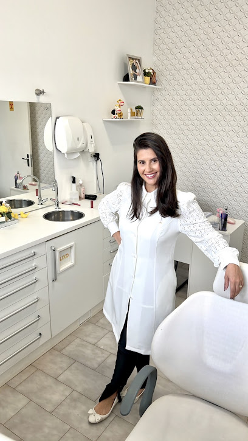

Escuta individual
As necessidades de cada paciente são acolhidas com atenção.
ODONTOLOGIA COM ATENÇÃO INDIVIDUAL
Atendimento odontológico em Ribeirão Preto, com atenção individualizada, conforto e cuidado em cada etapa.

Escuta cuidadosa. Conversas claras.
Respeito ao tempo de cada pessoa.
SOBRE A PROFISSIONAL
Cada paciente tem necessidades, histórias e expectativas diferentes. Por isso, o atendimento é conduzido com atenção, clareza e cuidado — para que cada etapa seja mais tranquila e confortável.
Um espaço para conversar, entender suas necessidades e encontrar o melhor caminho para cuidar do seu sorriso.
Saiba como funcionaODONTOLOGIA EM RIBEIRÃO PRETO
O cuidado começa com uma conversa. Entre em contato para conhecer o atendimento e tirar suas dúvidas.
Conversar com a clínicaAs necessidades de cada paciente são acolhidas com atenção.
Uma experiência pensada para trazer tranquilidade e conforto.
Explicações simples e acessíveis ao longo do atendimento.
Um espaço bem cuidado, reconhecido por pacientes.
A CONFIANÇA DE QUEM JÁ VEIO
Ótimo atendimento e uma boa estrutura.
“Depois de muitas experiências ruins, graças a Deus encontrei dra.”
SIMPLES E SEM PRESSA
Fale diretamente com a clínica pelo WhatsApp.
Combine o melhor horário para seu atendimento.
A Dra. Nayara avalia suas necessidades individualmente.
Entenda as próximas etapas para cuidar do seu sorriso.
CAMPOS ELÍSIOS · SP
Entre em contato com a clínica e agende seu atendimento.
Agendar pelo WhatsApp